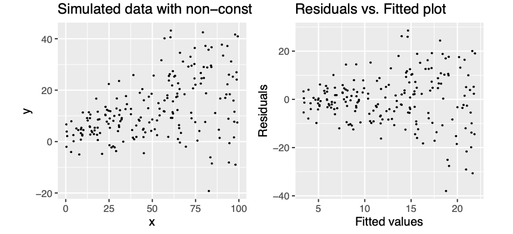

Up until now we were fitting models and discussed how to assess the model fit. Before making use of a fitted model for explanation or prediction, it is wise to check that the model provides an adequate description of the data. Informally we have been using box plots and scatter plots to look at the data. There are however formal definitions of the assumptions.
Assumption A: The deterministic part of the model captures all the non-random structure in the data
This implies that the mean of the errors \(\epsilon_i\) is zero.
Tt applies only over the range of explanatory variables.
Assumption B: the scale of variability of the errors is constant at all values of the explanatory variables
Practically we are looking at whether the observations are equally spread on both side of the regression line.
Assumption C: the errors are independent
Broadly speaking this means that knowledge of errors attached to one observation does not give us any information about the error attached to another.
Assumptions D: the errors are normally distributed
This will allow us to describe the variation in the model’s parameters estimates and therefore make inferences about the population from which our sample was taken.
Assumption E: the values of the explanatory variables are recorded without error
This one is not possible to check via examining the data, instead we have to consider the nature of the experiment.
2.1 Checking assumptions
Residuals, \(\hat{\epsilon_i} = y_i - \hat{y_i}\) are the main ingredient to check model assumptions. We use plots such as:
Histograms or normal probability plots of \(\hat{\epsilon_i}\)
useful to check the assumption of normality
Plots of \(\hat{\epsilon_i}\) versus the fitted values \(\hat{y_i}\)
used to detect changes in error variance
used to check if the mean of the errors is zero
Plots of \(\hat{\epsilon_i}\) vs. an explanatory variable \(x_{ij}\)
this helps to check that the variable \(x_j\) has a linear relationship with the response variable
Plots of \(\hat{\epsilon_i}\) vs. an explanatory variable \(x_{kj}\) that is not in the model
this helps to check whether the additional variable \(x_k\) might have a relationship with the response variable
Plots of \(\hat{\epsilon_i}\) in the order of the observations were collected
this is useful to check whether errors might be correlated over time
Let’s fit a simple model to predict BMI given waist for the diabetes study and see if the model meets the assumptions of linear models.
# fit simple linear regression modelmodel <-lm(BMI ~ waist, data = data_diabetes)# plot diagnostic plots of the linear model# by default plot(model) calls four diagnostics plots# par() divides plot window in 2 x 2 gridpar(mfrow=c(2,2))plot(model)
Default diagnostic residual plots based on the lm() model used to assess whether the assumptions of linear models are met. Simple regression to model BMI with waist explanatory variable.
The residual plots provides examples of a situation where the assumptions appear to be met.
The linear regression appears to describe data quite well.
There is no obvious trend of any kind in the residuals vs. fitted values (the shape is scattered) with potential few outliers that we may want to decided to exclude later.
Points lie reasonably well along the line in the normal probability plot, hence normality appears to be met.
Examples of assumptions not being met
Example of data with a typical seasonal variation (up and down) coupled wtih a linear trend. The blue line gives the linear regression fit to the data, which clearly is not adequate. In comparison, if we used a non-parametric fit, we will get the red line as the fitted relationship. The residual plot retains pattern, given by orange line, indicating that the linear model is not appropriate in this case

Example of non-constant variance
Example of residulas deviating from QQ plot, i.e. not following normal distribution. The residuals can deviate in both upper and lower tail. On the left tails are lighter meaning that they have smaller values that what would be expected, on the right there are heavier tails with values larger than expected
2.2 Influential observations
Sometimes individual observations can exert a great deal of influence on the fitted model.
One routine way of checking for this is to fit the model \(n\) times, missing out each observation in turn.
If we removed i-th observation and compared the fitted value from the full model, say \(\hat{y_j}\) to those obtained by removing this point, denoted \(\hat{y_{j(i)}}\) then
observations with a high Cook’s distance (measuring the effect of deleting a given observation) could be influential.
Let’s remove some observation with higher Cook’s distance from protein data set, re-fit our model and compare the diagnostics plots
# observations to be removed (based on Residuals vs. Leverage plot)obs <-c(13, 78, 83, 84)# fit models removing observationsdata_diabetes_flr <- data_diabetes[-obs, ]model_flr <-lm(BMI ~ waist, data = data_diabetes_flr)# plot diagnostics plotpar(mfrow=c(2,2))plot(model_flr)